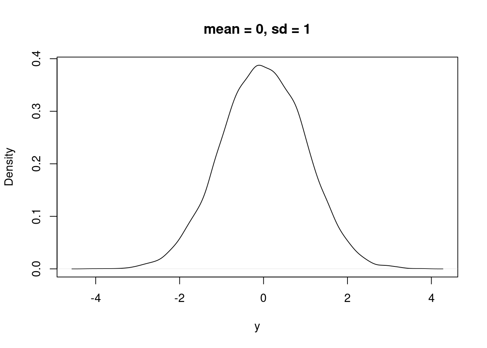
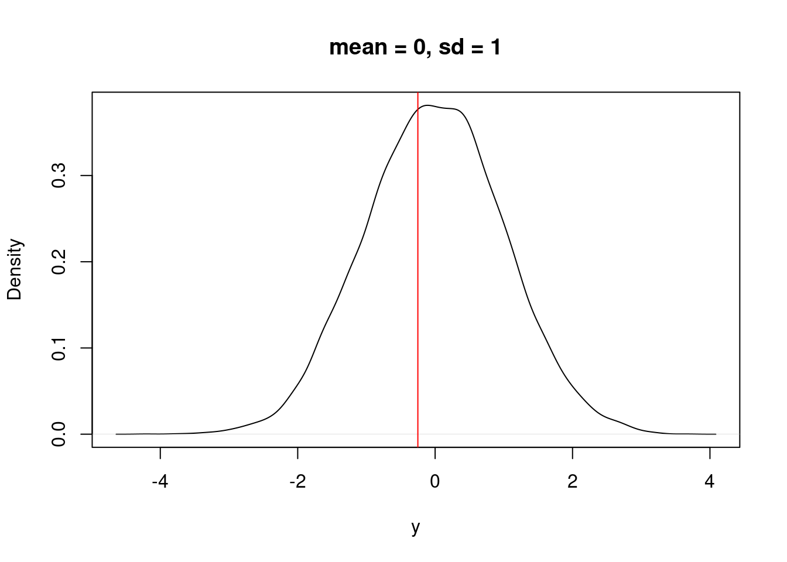

y_i <- -0.251323315 Parameter calibration: likelihood methods
15.1 Intro to probability and likelihood
A random variable is a quantity that can take on values due to chance - it does not have a single value but instead can take on a range of values. The chance of each value is governed by a probability distribution
For example, X is a random variable. A particular value for X is y_i
A random number is associated with a probability of it taking that value
P(X = y_i) = p_i
p_i is defined from a probability distribution (P). We may have an idea of the shape (i.e., normally distributed), but not the specific distribution (i.e. a normal with a mean = 0, and sd = 1). For example, Figure 15.1 is a normal distribution with a mean = 0 and sd = 1. (I created it by randomly drawing 10000 samples from a normal distribution using the rnorm function)
plot(density(rnorm(10000, mean = 0, sd = 1)), xlab = "y", main = "mean = 0, sd = 1")
For our random variable, if is is governed by the distribution above, a single sample (i.e., a measurement of X) will likely be close to 0 but sometimes it will be quite far away.
Imagine that we are measuring the same thing with the same sensor but the sensor has error that is normally distributed. We think that the measurement should be zero (mean = 0) but with the sensor uncertainty (sd = 1).
The question is “What is the probability that X = y_i given a normal distribution with mean = 0 and sd = 1?”. In Figure 15.2, the red line is a hypothetical observation (y_i).
plot(density(rnorm(10000, mean = 0, sd = 1)), xlab = "y", main = "mean = 0, sd = 1")
abline(v = y_i, col = "red")
We could also ask “What is the probability that X = y_i given a normal distribution with mean = 2 and sd = 1?” In Figure 15.3 you can see that the observation is at a lower probability in the distribution.
plot(density(rnorm(10000, mean = 2, sd = 1)), xlab = "y", main = "mean = 2, sd = 1")
abline(v = y_i, col = "red")We can numerically compare the answer to the two questions using the “Probability Density Function”. In R the PDF is represented by the dnorm function (d representing “density”). The dnorm function allows us to answer the question: Which mean is more likely given the data point?
message("mean of 0")mean of 0dnorm(x = y_i, mean = 0, sd = 1)[1] 0.3865399message("mean of 2")mean of 2dnorm(x = y_i, mean = 2, sd = 1)[1] 0.03164526Now, we can collect more data that represent more samples from the random variable with an unknown mean. Here are two data points.
y <- c(-0.2513233, -2.662035)What is the probability of both events occurring given the mean of 0? They are independent so we can multiply them.
IMPORTANT: If two random events are independent, then the probability that they both occur is the multiplication of the two individual probabilities. For example the probability of getting two heads in two coin flips is 0.5 * 0.5 = 0.25. If the events are not independent then we can’t just multiply (we will get to this later).
The two calls to the dnorm function are the evaluation of the two data points.
dnorm(x = y[1], mean = 0, sd = 1, log = FALSE) * dnorm(x = y[2], mean = 0, sd = 1, log = FALSE)[1] 0.004459699We can repeate the calculate but with a different mean to ask: What about with a mean of 2?
dnorm(x = y[1], mean = 2, sd = 1, log = FALSE) * dnorm(x = y[2], mean = 2, sd = 1, log = FALSE)[1] 2.40778e-07Using the values above, which mean (mean = 0 or mean = 2) is more likely given the two data points?
IMPORTANT: Since multiplying a lot of small numbers can result in very small numbers, we add the log of the densities. This is shown below by using log = TRUE.
message("log likelihood: mean of 0")log likelihood: mean of 0dnorm(x = y[1], mean = 0, sd = 1, log = TRUE) + dnorm(x = y[2], mean = 0, sd = 1, log = TRUE)[1] -5.412674message("log likelihood: mean of 2")log likelihood: mean of 2dnorm(x = y[1], mean = 2, sd = 1, log = TRUE) + dnorm(x = y[2], mean = 2, sd = 1, log = TRUE)[1] -15.23939This logically extends to three data points or more. We will get two log likelihood values because we are examining two “models” with three data points. In the code below, what are the two “models”?
y <- c(-0.2513233, -2.662035, 4.060981)
LL1 <- dnorm(x = y[1], mean = 0, sd = 1, log = TRUE) +
dnorm(x = y[2], mean = 0, sd = 1, log = TRUE) +
dnorm(x = y[3], mean = 0, sd = 1, log = TRUE)
LL2 <- dnorm(x = y[1], mean = 2, sd = 1, log = TRUE) +
dnorm(x = y[2], mean = 2, sd = 1, log = TRUE) +
dnorm(x = y[3], mean = 2, sd = 1, log = TRUE)
message("log likelihood: mean = 0")log likelihood: mean = 0LL1[1] -14.5774message("log likelihood: mean = 2")log likelihood: mean = 2LL2[1] -18.28215The separate calls to dnorm can be combined into one call by using the vectoration capacities of R. If a vector of obsevation is passed to the function, it will return a vector that was evaluated as each value of the vector. Then the vector can be used in a call to the sum function to get a single value.
message("log likelihood: mean = 0")log likelihood: mean = 0sum(dnorm(x = y, mean = 0, sd = 1, log = TRUE))[1] -14.5774message("log likelihood: mean = 2")log likelihood: mean = 2sum(dnorm(x = y, mean = 2, sd = 1, log = TRUE))[1] -18.28215The data (i.e., the three values in y) are more likely for a PDF with a mean = 0 than a mean = 2. Clearly we can compare two different guesses for the mean (0 vs. 2) but how do we find the most likely value for the mean?
First, lets create a vector of different mean values we want to test
#Values for mean that we are going to explore
mean_values <- seq(from = -4, to = 7, by = 0.1)
mean_values [1] -4.0 -3.9 -3.8 -3.7 -3.6 -3.5 -3.4 -3.3 -3.2 -3.1 -3.0 -2.9 -2.8 -2.7 -2.6
[16] -2.5 -2.4 -2.3 -2.2 -2.1 -2.0 -1.9 -1.8 -1.7 -1.6 -1.5 -1.4 -1.3 -1.2 -1.1
[31] -1.0 -0.9 -0.8 -0.7 -0.6 -0.5 -0.4 -0.3 -0.2 -0.1 0.0 0.1 0.2 0.3 0.4
[46] 0.5 0.6 0.7 0.8 0.9 1.0 1.1 1.2 1.3 1.4 1.5 1.6 1.7 1.8 1.9
[61] 2.0 2.1 2.2 2.3 2.4 2.5 2.6 2.7 2.8 2.9 3.0 3.1 3.2 3.3 3.4
[76] 3.5 3.6 3.7 3.8 3.9 4.0 4.1 4.2 4.3 4.4 4.5 4.6 4.7 4.8 4.9
[91] 5.0 5.1 5.2 5.3 5.4 5.5 5.6 5.7 5.8 5.9 6.0 6.1 6.2 6.3 6.4
[106] 6.5 6.6 6.7 6.8 6.9 7.0Now we will calculate the log likelihood of the data for each potential value of the mean. The code below loops over the different values of the mean that we want to test.
LL <- rep(NA, length(mean_values))
for(i in 1:length(mean_values)){
LL[i] <- sum(dnorm(y, mean = mean_values[i], sd = 1, log = TRUE))
}
LL [1] -43.16789 -41.86812 -40.59836 -39.35860 -38.14884 -36.96908 -35.81931
[8] -34.69955 -33.60979 -32.55003 -31.52026 -30.52050 -29.55074 -28.61098
[15] -27.70121 -26.82145 -25.97169 -25.15193 -24.36217 -23.60240 -22.87264
[22] -22.17288 -21.50312 -20.86335 -20.25359 -19.67383 -19.12407 -18.60431
[29] -18.11454 -17.65478 -17.22502 -16.82526 -16.45549 -16.11573 -15.80597
[36] -15.52621 -15.27644 -15.05668 -14.86692 -14.70716 -14.57740 -14.47763
[43] -14.40787 -14.36811 -14.35835 -14.37858 -14.42882 -14.50906 -14.61930
[50] -14.75954 -14.92977 -15.13001 -15.36025 -15.62049 -15.91072 -16.23096
[57] -16.58120 -16.96144 -17.37167 -17.81191 -18.28215 -18.78239 -19.31263
[64] -19.87286 -20.46310 -21.08334 -21.73358 -22.41381 -23.12405 -23.86429
[71] -24.63453 -25.43477 -26.26500 -27.12524 -28.01548 -28.93572 -29.88595
[78] -30.86619 -31.87643 -32.91667 -33.98691 -35.08714 -36.21738 -37.37762
[85] -38.56786 -39.78809 -41.03833 -42.31857 -43.62881 -44.96904 -46.33928
[92] -47.73952 -49.16976 -50.63000 -52.12023 -53.64047 -55.19071 -56.77095
[99] -58.38118 -60.02142 -61.69166 -63.39190 -65.12214 -66.88237 -68.67261
[106] -70.49285 -72.34309 -74.22332 -76.13356 -78.07380 -80.04404The relationship between the different mean values and the likelihood is a curve (Figure 15.4)
IMPORTANT: This curve may look like a probability density function (PDF) but it is not! Why? Because the area under the curve does not sum to 1. As a result 1) we use the term likelihood rather than density and 2) while the curve gives us the most likelihood estimate for the parameter, it does not give us the PDF of the parameter (even if we really really want the PDF, Bayesian statistics are needed for that)
plot(x = mean_values, y = LL, type = "o", xlab = "mean", ylab = "log(likelihood)")The most likely value is the highest value on the curve. Which is:
index_of_max <- which.max(LL)
mean_values[index_of_max][1] 0.4that compares well to directly calculating the mean
mean(y)[1] 0.3825409We just calculated the likelihood of the data GIVEN our model where our model was that “the data are normally distributed with a specific mean”. We found the most likely value for a parameter in the model (the parameter being the mean of the PDF).
For use in R tools that find the minimum of a function, you can find the minimum of the negative log likelihood curve (Figure 15.5)
plot(x = mean_values, y = -LL, type = "o", xlab = "mean", ylab = "-1 * log(likelihood)") #Notice negative sign
abline(v = mean(y), col = "red")To use optimizer function in R, we first need to create a function that defines our likelihood (this is the same as above with the mean being `par[1]`). The likelihood is also called the cost function where worse values for the parameter have worse cost scores.
LL_fn <- function(y, par){
#NEED NEGATIVE BECAUSE OPTIM MINIMIZES
-sum(dnorm(y, mean = par[1], sd = 1, log = TRUE))
}This likelihood function is then used in an optimization function that finds the minimum (don’t worry about the details)
#@par are the starting values for the search
#@fn is the function that is minimized (find parameters that yield the lowest -log(LL))
#@ anything else like x are arguments needed by the LL_fn
fit <- optim(par = 4, fn = LL_fn, method = "BFGS", y = y)
fit$par
[1] 0.3825409
$value
[1] 14.35789
$counts
function gradient
4 3
$convergence
[1] 0
$message
NULLThe optimal value from fit is similar to our manual calculation and equal to the actual mean.
message("From optim")From optimfit$par[1] 0.3825409message("From manual calcuation")From manual calcuationmean_values[which.max(LL)][1] 0.4message("From the mean function")From the mean functionmean(y)[1] 0.3825409Sweet it works! I know you are thinking “Wow a complicated way to calculate a mean…great thanks!”. But the power is that we can replace the direct estimation of the mean with a “process” model that predicts the mean.
Here is a simple model that predicts y using a regression y = par[1] + par[2] * x
First we are going to create some simulated data from the regression and add normally distributed noise.
set.seed(100)
par_true <- c(3, 1.2) #Slope and intercept
sd_true <- 0.9 #noise term
x <- runif(100, 3, 10)
y_true <- par_true[1] + par_true[2] * x
y <- rnorm(length(y_true), mean = y_true, sd = sd_true) #This is the "fake data"The fake data are shown in Figure 15.6.
plot(x, y)Now we need a function to make the regression calculation from the parameters and inputs (x)
pred_linear <- function(x, par){
y <- par[1] + par[2] * x
}Now our likelihood function uses the result of pred_linear as the mean of the PDF. This asks how likely each data point is given the parameters and inputs (x). Unlike our example above where mean is constant, the mean is allowed to be different for each data point because the value of the input (x) is different for each point.
LL_fn <- function(par, x, y){
#NEED NEGATIVE BECAUSE OPTIM MINIMIZES
-sum(dnorm(y, mean = pred_linear(x, par), sd = 1, log = TRUE))
}As an example, for a value of par[1] = 0.2, and par[2] = 1.4 we can calculate the likelihood for the first two data points with the following
dnorm(y[1], mean = pred_linear(x[1], c(0.2, 1.4)), sd = 1, log = TRUE) + dnorm(y[2], mean = pred_linear(x[2], c(0.2, 1.4)), sd = 1, log = TRUE) # + ...[1] -2.80959Now use optim to solve
pred_linear <- function(x, par){
y <- par[1] + par[2] * x
}
LL_fn <- function(par, x, y){
#NEED NEGATIVE BECAUSE OPTIM MINIMIZES
-sum(dnorm(y, mean = pred_linear(x, par), sd = 1, log = TRUE))
}
fit <- optim(par = c(0.2, 1.5), fn = LL_fn, method = "BFGS", x = x, y = y)How do the estimated parameters compare to the true values?
message("From optim")From optimfit$par[1] 2.976254 1.191683message("True values (those we used to generate the data)")True values (those we used to generate the data)par_true[1] 3.0 1.2A key take home is that defining the likelihood function requires two steps
- Write down your process model. This is a deterministic model (meaning that it doesn’t have any random component)
#Process model
pred_linear <- function(x, par){
y <- par[1] + par[2] * x
}- Write down your probability model. You can think of this as your data model because it represents how you think the underlying process is converted into data through the random processes of data collection, sampling, sensor uncertainty, etc. In R this will use a “d” function:
dnorm,dexp,dlnorm,dgamma, etc.
#Probability model
LL_fn <- function(par, x, y){
-sum(dnorm(y, mean = pred_linear(x, par), sd = 1, log = TRUE))
}There is one more assumption in our likelihood calculation that we have not addressed: we are assuming the standard deviation in the data is known (sd = 1). In reality we don’t know what the sd is. This assumption is simple to fix. All we need to do is make the sd a parameter that we estimate.
Now there is a par[3] in in the likelihood function (but it isn’t in the process model function)
#Probability model
LL_fn <- function(par, x, y){
-sum(dnorm(y, mean = pred_linear(x, par), sd = par[3], log = TRUE))
}Fitting the sd is not necessarily clear. Think about it this way: if the sd is too low, there will be very low likelihood for data near the mean. In this case, you can increase the likelihood just by increasing the sd parameter (not changing other parameters).
How we can estimate all three parameters
fit <- optim(par = c(0.2, 1.5, 2), fn = LL_fn, method = "BFGS", x = x, y = y)How well to they compare to the true values used to generate the simulated data?
message("From optim")From optimfit$par[1] 2.9762510 1.1916835 0.9022436message("True values (those we used to generate the data)")True values (those we used to generate the data)c(par_true, sd_true)[1] 3.0 1.2 0.9Sweet it works! I know you are thinking “Wow a complicated way to calculate a linear regression…thanks…I can just use the lm() function in R to do this!”.
fit2 <- lm(y ~ x)
summary(fit2)
Call:
lm(formula = y ~ x)
Residuals:
Min 1Q Median 3Q Max
-1.96876 -0.57147 -0.03937 0.48181 2.39566
Coefficients:
Estimate Std. Error t value Pr(>|t|)
(Intercept) 2.97625 0.34386 8.655 9.95e-14 ***
x 1.19168 0.04994 23.862 < 2e-16 ***
---
Signif. codes: 0 '***' 0.001 '**' 0.01 '*' 0.05 '.' 0.1 ' ' 1
Residual standard error: 0.9114 on 98 degrees of freedom
Multiple R-squared: 0.8532, Adjusted R-squared: 0.8517
F-statistic: 569.4 on 1 and 98 DF, p-value: < 2.2e-16Notice how the “Residual standard error” is similar to our sd?
But the power is that we are not restricted to the assumptions of a linear regression model. We can use more a complicated and non-linear “process” models (not restricted to y = mx + b) and we can use more complicated “data” models than the normal distribution with constant variance (i.e., single value for sd that is used for all data point)
For example, we can simulate new data that assumes the standard deviation increases as the prediction increases (larger predictions have more variation). This might be due to sensor error increasing with the size of measurement. In this case we multiply y times a scalar (sd_scalar_true)
set.seed(100)
x <- runif(100, 3, 10)
par_true <- c(3, 1.2)
sd_scalar_true <- 0.1
y_true <- par_true[1] + par_true[2] * x
y <- rnorm(length(y_true), mean = y_true, sd = sd_scalar_true * y) #This is the "fake data"The fake data are shown in Figure 15.7.
plot(x, y)We use the same “process model” because we have not changed how we think the underlying process works
#Process model
pred_linear <- function(x, par){
y <- par[1] + par[2] * x
}However, we do have to change our “data” or “probability” model. See how sd in the dnorm is now sd = par[3] * pred_linear(x, par) so that the sd increases with the size of the prediction
#Probability model
LL_fn <- function(par, x, y){
-sum(dnorm(y, mean = pred_linear(x, par), sd = par[3] * pred_linear(x, par), log = TRUE))
}We can now fit it
fit <- optim(par = c(0.2, 1.5, 1), fn = LL_fn, method = "BFGS", x = x, y = y)
fit$par[1] 3.2107510 1.1663474 0.1013275As a result, we now better represent how data is generated from the underlying process. This will often change and improve parameter estimates for the process model.
As another example, you can easily change the process model to be non-linear. For example, we will generate simulated data from a saturating function (a Michaelis-Menten function)
set.seed(100)
x <- runif(100, 0.1, 10)
par_true <- c(2, 0.5)
sd_true <- 0.1
y <- par_true[1] * (x / (x + par_true[2]))
y <- rnorm(length(y), mean = y, sd = sd_true)The fake data are shown in Figure 15.8.
plot(x, y)We certainly don’t want to fit a linear regression to these data (though we could but it would not fit well). Fortunately, fitting it using likelihood is as simple as changing the process model. Here is our new process model.
#Process model
pred_mm <- function(x, par){
y <- par[1] * (x / (par[2] + x))
}The “data” or “probability” model stays the same
#Probability model
LL_fn <- function(par, x, y){
-sum(dnorm(y, mean = pred_mm(x, par), sd = par[3], log = TRUE))
}And we fit it
fit <- optim(par = c(0.2, 1.5, 1), fn = LL_fn, method = "BFGS", x = x, y = y)And it fits well
fit$par[1] 1.97737266 0.47210121 0.09996482c(par_true, sd_true)[1] 2.0 0.5 0.1Figure 15.9 shows the curve from the optimized parameters with the observations
plot(x, y)
curve(pred_mm(x, par = fit$par), from = 0.1, to = 10, add = TRUE)Finally, we don’t have to assume that the data model is a normal distribution. Here is an example assuming that the data model follows a gamma distribution (Figure 15.10). Learn more about the gamma here
LL_fn <- function(par, x, y){
-sum(dgamma(y, shape = (pred_mm(x, par)^2/par[3]), rate = pred_mm(x, par)/par[3], log = TRUE))
}
fit <- optim(par = c(0.2, 1.5, 1), fn = LL_fn, x = x, y = y)15.1.1 Take home messages
- Think about what process produces your data. Consider deterministic mechanisms and random processes.
- Write your process model as a function of inputs and parameters. Your process model should be deterministic (not have any random component). The process model can be a simple empirical model or a process model like Chapter 12.
- Write down your data model. What random processes converts the output of your process model to data? This could include variance in observations, variance in the process models (it doesn’t represent the real world perfectly even if we could observe it perfectly), and variation among sample units (like individuals). In a likelihood analysis, all of these forms are typically combined together.
- Embed your process model as the mean for your data model and solve with an optimizing algorithm. In the normal distribution, the mean is one of the parameters of the PDF so you can use the process model prediction directory in the data model as the mean. In other distributions the parameters of the PDF are not the mean, instead the mean is a function of the parameters. Therefore you will need to convert the mean to the parameters of the distribution. This is called “moment matching.”
15.1.2 Brief introduction to other components of a likelihood analysis
- Estimating uncertainty in the parameters using the shape of the likelihood curve (you can use the shape of the likelihood curve to estimate confidence (steeper = more confidence). In the Figure 15.11, the blue line has more data in the calculation of the mean than the black line. The dashed lines are the 2-unit likelihood level (2 log(LL) units were subtracted from the highest likelihood to determine the dashed line). The values of the dashed lines where they cross the likelihood curve with the same color are approximately the 95% confidence intervals for the parameter.
#Create a dataset
y_more_data <- rnorm(20, mean = 0, sd = 1)
#Select only 5 of the values from the larger dataset
y_small_data <- y_more_data[1:5]
#Calculate the likelihood surface for each of the datasets
mean_values <- seq(from = -4, to = 7, by = 0.1)
LL_more <- rep(NA, length(mean_values))
for(i in 1:length(mean_values)){
LL_more[i] <- sum(dnorm(y_more_data, mean = mean_values[i], sd = 1, log = TRUE))
}
LL_small <- rep(NA, length(mean_values))
for(i in 1:length(mean_values)){
LL_small[i] <- sum(dnorm(y_small_data, mean = mean_values[i], sd = 1, log = TRUE))
}
#Find the highest likelihood
mle_LL_small <- LL_small[which.max(LL_small)]
mle_LL_more <- LL_more[which.max(LL_more)]Comparing different models to select for the best model (uses the likelihood of the different models + a penalty for having more parameters). AIC is a common way to compare models (https://en.wikipedia.org/wiki/Akaike_information_criterion). It is 2 * number of parameters - 2 * ln (likelihood). Increasing the likelihood by adding more parameters won’t necessarily result in lowest AIC (lower is better) because it includes a penalty for having more parameters.
There are more complete packages for doing likelihood analysis that optimize parameters, calculate AIC, estimate uncertainty, etc. For example, the
likelihoodpackage andmlefunction in R do these calculations for you. Here is an example using themlepackage (note that themlepackage assumes that you have created the objects x and y and only has parameters in the function calls…see how pred_mm and LL_fn don’t have x and y as arguments)
pred_mm <- function(par1, par2){
par1 * (x / (par2 + x))
}
LL_fn <- function(par1, par2, par3){
mu <- pred_mm(par1, par2)
-sum(dnorm(y, mean = mu, sd = par3, log = TRUE))
}
library(stats4)
fit <- mle(minuslogl = LL_fn, start = list(par1 = 0.2, par2 = 1.5, par3 = 1), method = "BFGS", nobs = length(y))
AIC(fit)[1] -170.8059summary(fit)Maximum likelihood estimation
Call:
mle(minuslogl = LL_fn, start = list(par1 = 0.2, par2 = 1.5, par3 = 1),
method = "BFGS", nobs = length(y))
Coefficients:
Estimate Std. Error
par1 1.97737266 0.021219232
par2 0.47210121 0.043616015
par3 0.09996482 0.007065724
-2 log L: -176.8059 logLik(fit)'log Lik.' 88.40293 (df=3)confint(fit)Profiling... 2.5 % 97.5 %
par1 1.93648687 2.0205486
par2 0.39017722 0.5630485
par3 0.08755983 0.115596615.1.3 Key point
Likelihood approach shown here gives us the likelihood of the particular set of data GIVEN the model. It does not give us the probability of the model given the particular set of data (i.e., the probability distributions of the model parameters). Ultimately, we want the probability distributions of the model parameters so that we can turn it around forecast the probability of yet to be collected data. For this we need to use Bayesian statistics in Chapter 16!
15.2 Problem set
Copy the text and code below into an .Rmd or .qmd document and complete the assignment. You will be asked submit (via Canvas) your rendered (or knitted) html document
library(tidyverse)15.2.1 Part 1
Load dataset
d <- read_csv(file = "https://data.ecoforecast.org/neon4cast-targets/phenology/phenology-targets.csv.gz", show_col_types = FALSE)Filter the dataset to only include the site_id BART (Bartlett Experimental Forest in the White Mountains of New Hampshire) and the dates between 2019-01-01 and 2019-07-01. Convert the date to Day of Year (hint: use lubridate:: yday() function). Remove rows with gcc_90 equal to NA or gcc_sd equal to 0.
bart_2019 <- d %>%
filter(site_id == "BART",
datetime > as_date("2019-01-01"),
datetime < as_date("2019-07-01"),
variable == "gcc_90") %>%
mutate(doy = yday(datetime)) %>%
filter(!is.na(observation),
observation > 0)Question 1: How is gcc_90 related to day of year?
Answer 1:
#Add AnswerQuestion 2: Use a histogram to examine the distribution of the gcc_90
Answer 2:
#Add AnswerFirst create a function called `pred_logistic’ that is your process model. The model is the the logistic curve which ish the equation \[P_1 + P_2 {{exp(P_3 + P_4 x)}\over{1+exp(P_3 + P_4 x)}}\]
Question 3: Is this process model a dynamic model? Why or why not?
Answer 3:
Question 4: Based on the equation above, write a function that predicts the gcc_90 as a function of the parameters (\(P\)) and x where x is the DOY. Name that function pred_logistic.
Answer 4:
#Add AnswerQuestion 5: Write a function that calculates the negative log-likelihood of the data given a set of parameters governing the process and data models. Assume a normal distribution and be sure to estimate the sd in the data model.
Answer 5:
#Add AnswerQuestion 6: Use the optim function to find the most likely parameter values. Use the following as starting values par = c(0.34,0.11,-15,0.11, 1) where the first four are the theta parameters from your process model and the fifth is the sd of your data model.
Answer 6:
#Add AnswerQuestion 7: Use your optimal parameters in the pred_logistic function to predict the data. Save this as the object predicted
Answer 7:
#Add AnswerQuestion 8: Calculate the residuals and plot a histogram of the residuals
Answer 8:
#Add AnswerQuestion 9: How does the distribution of the data (Question 2) compare to the distribution of the residuals?
Answer 9:
Question 10: Predict year 2020 using the process model parameters from the 2019 fit.
#Add AnswerAnswer 10:
Question 11: Plot the forecast from Question 10 over the data from 2020 (I give the code for getting the 2020 data)
Answer 11:
bart_2020 <- d %>%
filter(site_id == "BART",
datetime > as_date("2020-01-01"),
datetime < as_date("2020-07-01"),
variable == "gcc_90") %>%
mutate(doy = yday(datetime)) %>%
filter(!is.na(observation),
observation > 0)Question 12: Do you think your model from 2019 is reasonable for predicting 2020?
Answer 12:
15.2.2 Part 2
Using the following data
df <- read_csv("https://raw.githubusercontent.com/frec-5174/eco4cast-in-R-book/main/data/soil_respiration_module_data.csv", show_col_types = FALSE)It is a dataset that reports soil respiration, soil temperature, and soil moisture over a year at the University of Michigan Biological Station (from Nave, L.E., N. Bader, and J.L. Klug)
The columns correspond to the following
- doy = Day of Year
- soil_resp: Soil respiration (micromoles CO2 per m2 per second)
- soil_temp: Soil Temp (deg C) soil_moisture: Soil Moisture (%)
Use maximum likelihood to estimate the parameters in the model that predicts the relationship between soil temperature and soil respiration using the Q10 function below
\[\theta_1 * \theta_2 ^{{(T - 20)}\over{10}}\]
Show all the steps to determine the most likely parameter values, report the parameter values, and plot the data and predictions on the same plot